Visualizing transition trees
Written by Mohammed Saqr and Sonsoles López-Pernas
Source:vignettes/articles/visualization.Rmd
visualization.RmdA variable-order transition tree is a hierarchy of histories. Its root holds the overall distribution of states; each child extends its parent’s history by one earlier state and carries its own next-state distribution (Ron, Singer and Tishby, 1996; Gabadinho and Ritschard, 2016). A figure of such a model has to show three things at once: which histories the model keeps, how much data supports each one, and what each history predicts. No single display shows all three well for a large tree. The package therefore offers several views of the same model. Tree drawings show the structure. Pathway charts rank histories by frequency or by how much they change the prediction. Diagnostic plots follow one pathway or one sequence. Inferential plots show the uncertainty and the group differences behind a result.
Every static plot is a ggplot2 object, so it can be
themed, annotated and saved with the usual ggplot2 tools.
One interactive view uses visNetwork. The default colors
are the Okabe-Ito palette.
Data
Three bundled datasets are used.
-
trajectories: the engagement states (Active,Average,Disengaged) of 138 learners over 15 time steps, one row per learner. It is used for the tree drawings and the pathway charts. -
group_regulation_long: 27,533 collaborative-regulation events in long format.Actoridentifies the learner,Timeorders the events,Actionis the state (nine regulation moves) andAchiever(HighorLow) is the group. It is used for the group plots. -
ai_long: 8,551 coded messages from human-AI collaboration sessions.projectis the actor,session_idthe session andcodethe state (eight moves). It is used for the forward trajectory plots.
To fit the tree used in most of this guide, we call
context_tree() with max_depth and
min_count, and prune it with prune_tree().
library(transitiontrees)
tree <- context_tree(trajectories, max_depth = 3L, min_count = 5L)
pruned <- prune_tree(tree)
pruned
#> <transitiontrees> 18 nodes, depth <= 3, 3 states [pruned]
#> alphabet : Active, Average, Disengaged
#> fit on : 136 sequences, 1870 observations
#> smoothing: floor(ymin=0.001, rule=interpolate) min_count = 5
#> pruned by: G2 alpha = 0.05
#> (start) n=1870 -> Average (0.43)
#> |-- Active n=658 -> Active (0.70)
#> | |-- Active n=433 -> Active (0.79)
#> | | `-- Average n=70 -> Active (0.53)
#> | `-- Average n=144 -> Active (0.50)
#> | `-- Disengaged n=12 -> Average (0.83)
#> |-- Average n=751 -> Average (0.61)
#> | |-- Active n=160 -> Average (0.52)
#> | | `-- Disengaged n=10 -> Average (0.50)
#> | |-- Average n=419 -> Average (0.68)
#> | | `-- Active n=80 -> Average (0.57)
#> | `-- Disengaged n=122 -> Average (0.52)
#> | `-- Disengaged n=31 -> Average (0.71)
#> `-- Disengaged n=325 -> Disengaged (0.48)
#> |-- Active n=23 -> Active (0.39)
#> |-- Average n=134 -> Average (0.50)
#> | `-- Active n=17 -> Active (0.41)
#> `-- Disengaged n=139 -> Disengaged (0.68)The pruned tree has 18 contexts: the root, three of depth one, eight of depth two and six of depth three.
The tree
To draw the tree, we call plot() with
style. All static styles share one encoding: the size of a
node is the number of observations of its context, and the width of a
branch is the number of observations flowing into the child.
Horizontal tree
style = "horizontal" (the default) draws the root on the
left and deeper contexts to the right. Each node is labeled with its
pathway and its most likely next state with that state’s probability,
and each node is colored by the most recent state of its pathway.
plot(pruned, style = "horizontal")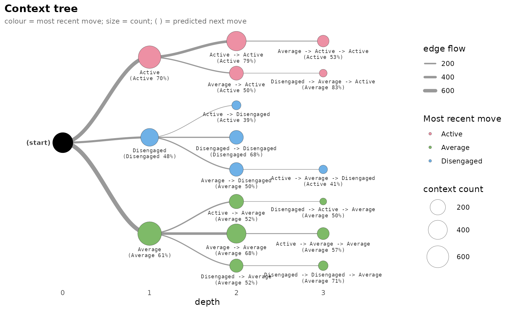
This style suits a report that cites specific pathways, because every
pathway and its prediction can be read from the figure. Adding
show_prediction = FALSE keeps only the pathway labels.
point_size_range and edge_size_range widen or
compress the size scales without changing the encoding.
plot(pruned, style = "horizontal", show_prediction = FALSE,
point_size_range = c(3, 12), edge_size_range = c(0.4, 3.5))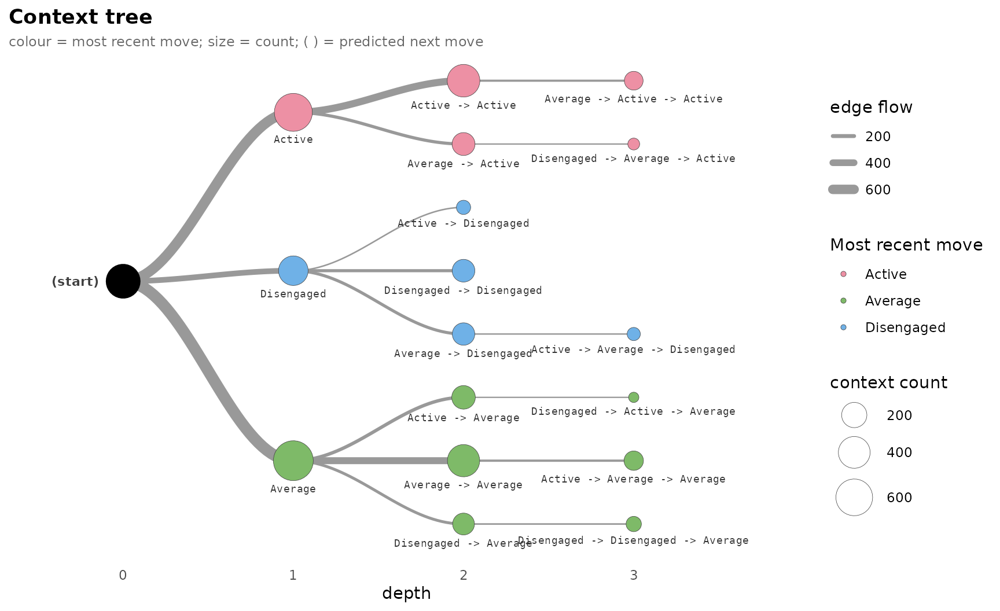
Radial dendrogram
style = "dendrogram" wraps the tree into a circle with
the root at the center and the deepest contexts on the outer ring. Nodes
are colored by the oldest state of their pathway, so each first-level
branch keeps one color.
plot(pruned, style = "dendrogram")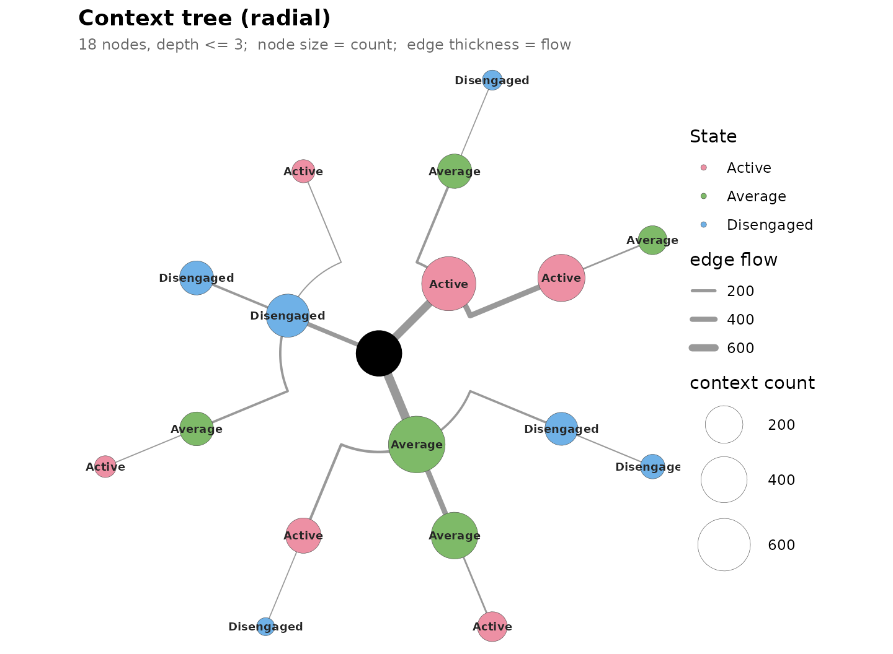
The thick inner branches are the frequent histories; the thin outer twigs are deeper contexts that pruning kept because they change the prediction, not because they are frequent.
Icicle
style = "icicle" is a sunburst: each ring is one depth,
and the angle of a segment is proportional to the count of its context.
The inner ring carries the full state names and the outer rings
three-letter abbreviations.
plot(pruned, style = "icicle")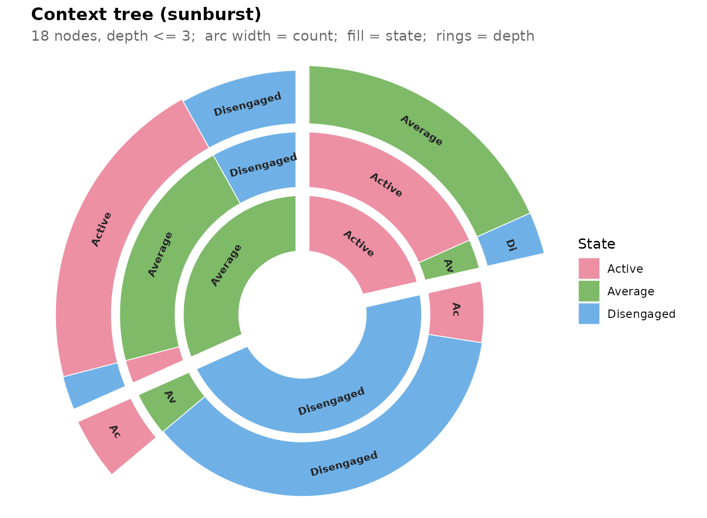
Because area follows the counts, a frequent state takes most of the ring and the rare histories become thin slices. The display gives an accurate impression of how the observations are distributed over the contexts.
Interactive tree
style = "interactive" draws the same tree as a
visNetwork widget that can be dragged and zoomed. Hovering
over a node shows its pathway, count, most likely next state and full
next-state distribution. visNetwork is a suggested package,
so the call is guarded.
plot(pruned, style = "interactive", height = "450px")One tree per group
A tree fitted with group holds one tree per group. To
fit one, we call context_tree() on the long log with
actor, time and action naming the
columns and group naming the grouping column.
regulation <- context_tree(group_regulation_long, actor = "Actor",
time = "Time", action = "Action",
group = "Achiever", max_depth = 2L,
min_count = 10L)
regulation
#> <transitiontrees_group> 2 groups
#> High 74 nodes, depth <= 2, 1000 seq, 13721 obs
#> Low 77 nodes, depth <= 2, 1000 seq, 13812 obsEach group’s tree has more than 70 contexts before pruning. To draw
each group’s pruned tree, we call plot() on the pruned
group object. Further arguments are passed to each tree’s plot, and each
figure is captioned with its group.
plot(prune_tree(regulation), style = "dendrogram")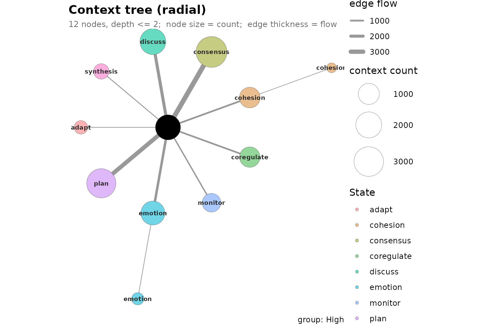
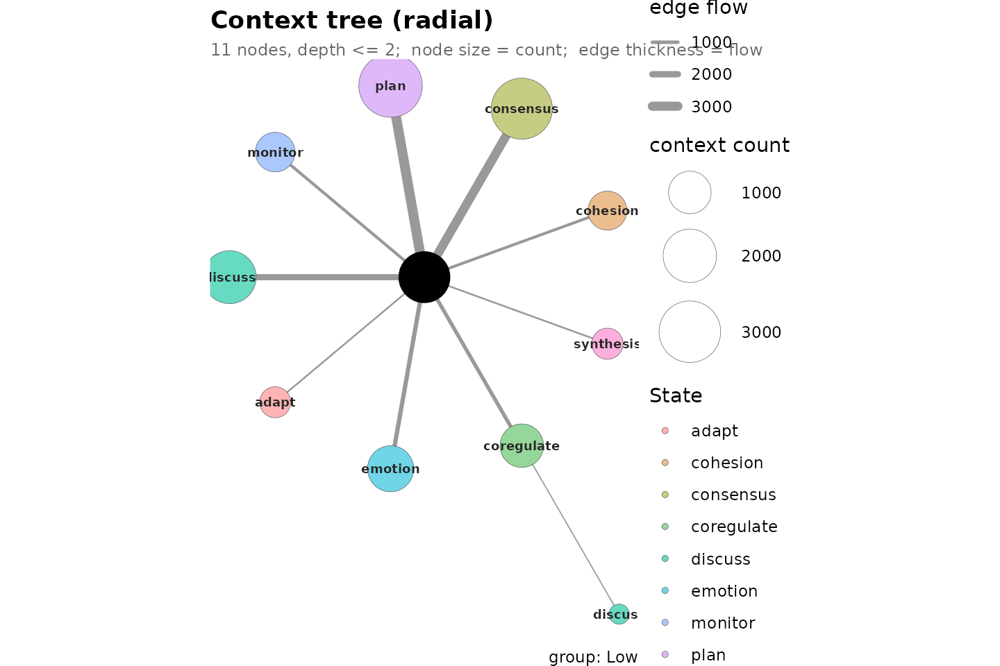
After pruning, the high achievers’ tree keeps 12 contexts and the low achievers’ 11, almost all of depth one: for both groups the most recent move carries most of what can be predicted.
Ranking pathways
The tree drawings show structure. The pathway charts rank the contexts so that the most frequent or most informative ones can be read directly.
Next-state heatmap
To draw each context’s next-state distribution as a row of a heatmap,
we call plot_pathways() with top for the
number of contexts and sort_by for the order. The most
likely next state of each row is shown in bold, and a >
before the pathway marks a context whose most likely next state differs
from its parent’s.
plot_pathways(pruned, top = 12L, sort_by = "count")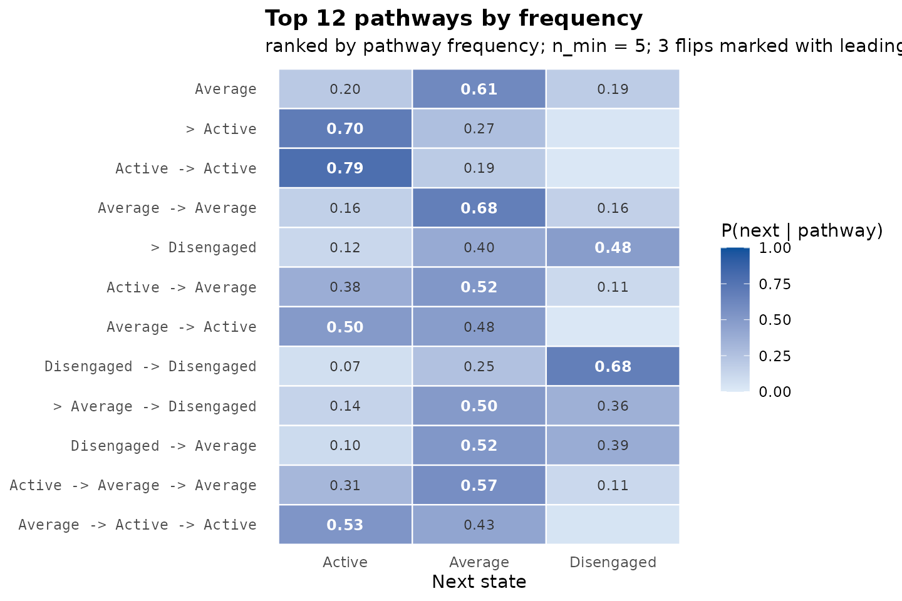
Sorted by count, the rows are the frequent histories, and most of
them continue to the same state. To rank by how far each context’s
distribution departs from its parent’s, we set
sort_by = "divergence".
plot_pathways(pruned, top = 12L, sort_by = "divergence")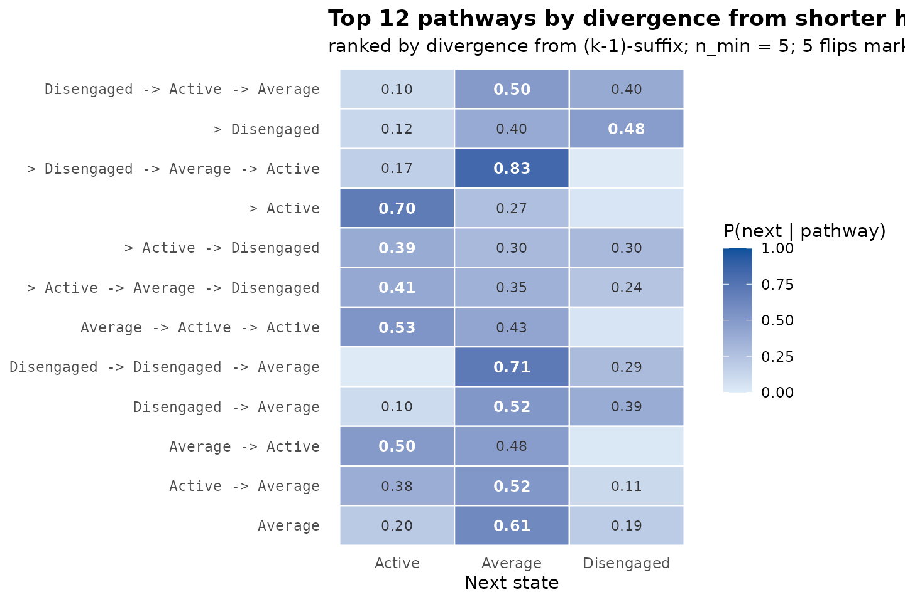
The two orderings answer different questions: which histories are common, and which histories change what happens next.
Divergence chart
To rank contexts by their Kullback-Leibler divergence from the
parent, we call plot_divergence() with top and
min_count. Contexts whose most likely next state differs
from their parent’s are marked.
plot_divergence(pruned, top = 12L, min_count = 5L)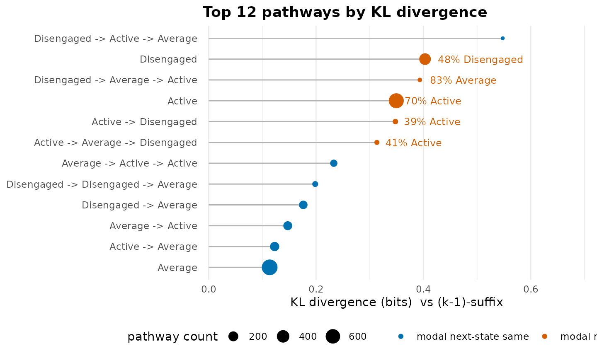
min_count removes contexts too rare for their divergence
to be trusted; the bootstrap in Pathway reliability with the
bootstrap quantifies the same concern.
Next-state distributions
To draw the full next-state distribution of each context as small
multiples, we call plot_distributions() with
top for the number of contexts, or contexts
for chosen ones.
plot_distributions(pruned, top = 6L)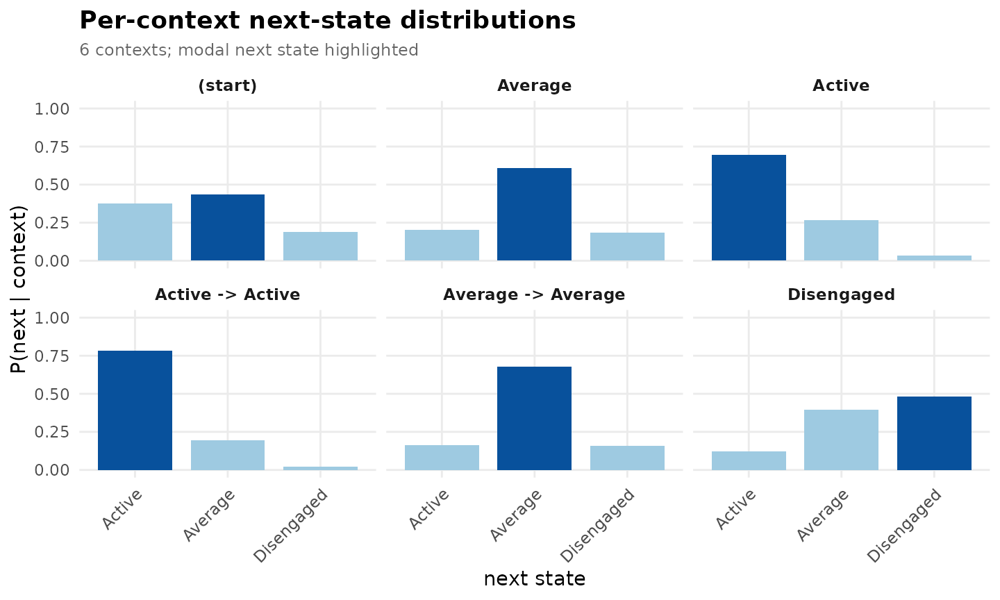
A panel with one tall bar is a context whose continuation is nearly settled; a flat panel is a point where the history does not determine the next state.
How much history a pathway needs
To follow one pathway from its full context down to the root, we call
plot_pruning() on the unpruned tree with the pathway. Each
row is one suffix of the pathway, from the full context to the root,
with its next-state distribution; the suffixes that the
pruning test keeps are drawn solid and the ones it drops faded.
plot_pruning(tree, "Active -> Active -> Average")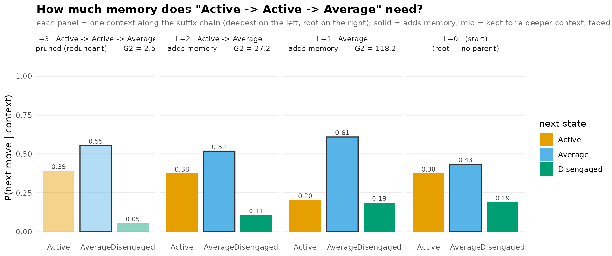
The figure answers, for one pathway, how far back the history has to
reach before the prediction stops changing. Here the context
Active -> Average changes the prediction of
Average
(
= 27.2), but adding the earlier Active does not
(
= 2.5), so the pathway needs two steps of history, not three.
Forward trajectories
A context tree reads histories backwards from the present. To draw
the same sequences forward in time, as a tree of the paths that
sequences take from their first state, we call
plot_trajectories() with measure and
min_count for the smallest path shown. The forward view
needs a richer alphabet than three states to be informative, so we fit a
tree to the human-AI collaboration log.
ai_tree <- context_tree(ai_long, actor = "project", session = "session_id",
action = "code", max_depth = 3L, min_count = 10L)With measure = "frequency" the paths are colored by the
number of sequences that take them.
plot_trajectories(ai_tree, measure = "frequency", min_count = 20L)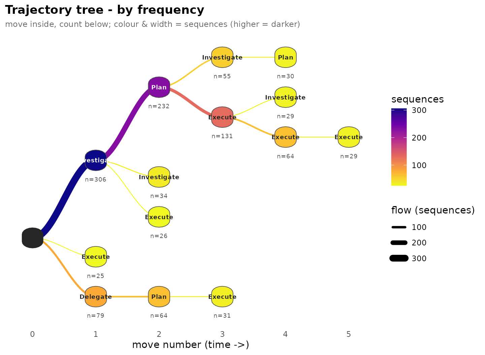
With measure = "predictability" they are colored by the
probability that the model gives each step, given the path before
it.
plot_trajectories(ai_tree, measure = "predictability", min_count = 20L)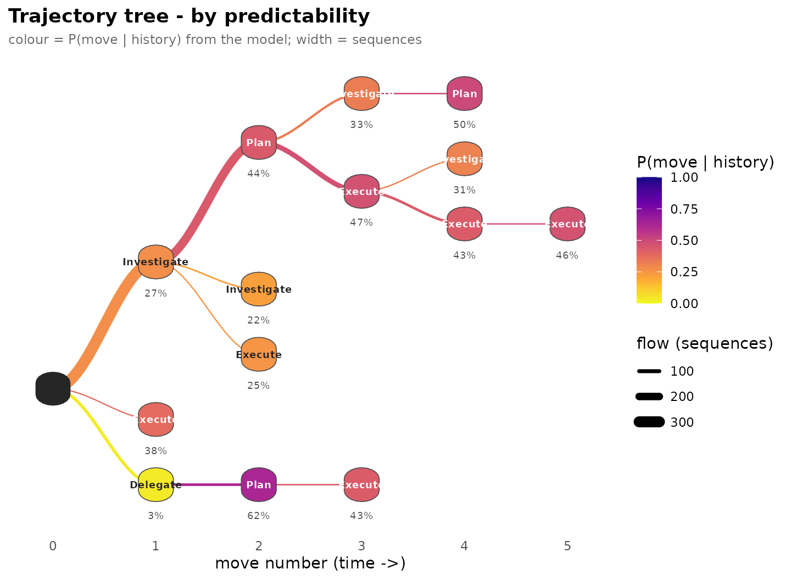
Read together, the two show where traffic and predictability part: a path that many sequences take but that the model predicts poorly is a decision point, where sequences with the same past go different ways.
Predictive performance
To show how well the model predicts sequences, we call
plot_predictive() with type.
"logloss" plots each transition’s surprise in bits against
its position; "ecdf" and "position" are the
other views. Held-out data should be used for an honest evaluation; the
bundled data are scored here only to show the display.
plot_predictive(pruned, newdata = trajectories, type = "logloss")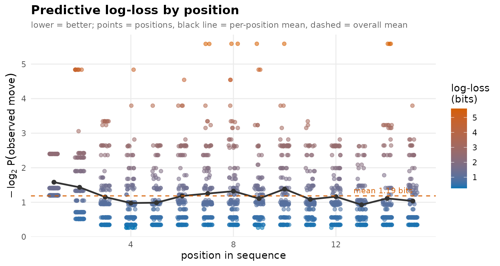
Held-out evaluation and the other two views are covered in Prediction, scoring, imputation and mining.
Uncertainty and comparison
Bootstrap forest plot
To show the bootstrap uncertainty of each pathway, we call
plot() on the result of bootstrap_pathways().
Each row is a pathway’s
against its parent with its 95% bootstrap interval; the dashed line is
the chi-square critical value; color marks whether the pathway is
stable, informative, both or neither.
boot <- bootstrap_pathways(pruned, iter = 200L, seed = 1L)
plot(boot)
To draw the resample distribution of a statistic for the leading
pathways, we call plot_pathway_resamples() with
stat and top.
plot_pathway_resamples(boot, stat = "divergence", top = 6L)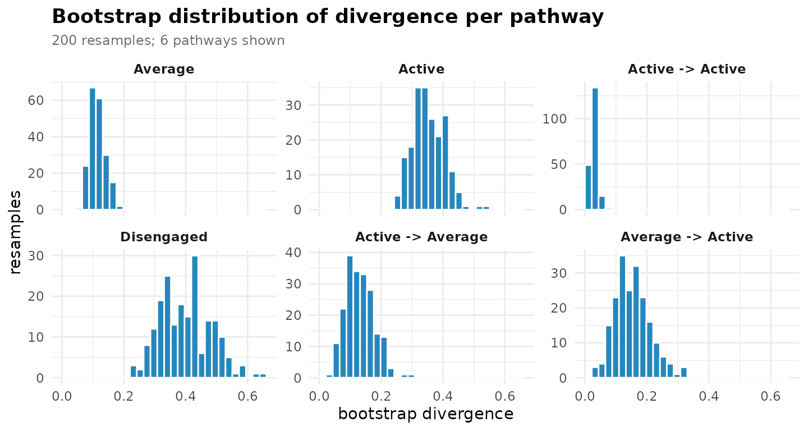
Comparing two trees
To test whether two groups produce different pathway distributions,
we call compare_trees() on the group object with
iter for the number of permutations. plot()
draws the permutation null of the distance between the trees, with the
observed distance as a vertical line. A small iter keeps
this guide fast; a reported test should use more permutations.
comparison <- compare_trees(prune_tree(regulation), iter = 99L, seed = 1L)
plot(comparison)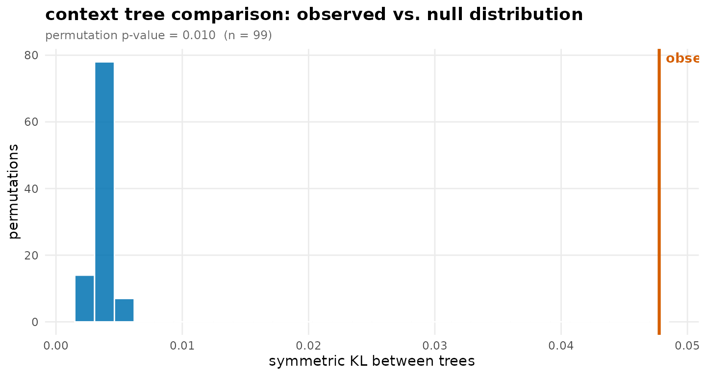
Comparing groups pathway by pathway
compare_groups() tests the groups context by context. To
plot the contexts whose next-state distributions differ most between the
groups, we call plot() on its result;
style = "matrix" draws the distances between all pairs of
groups instead.
group_comparison <- compare_groups(regulation, iter = 99L, seed = 1L)
plot(group_comparison, top = 12L)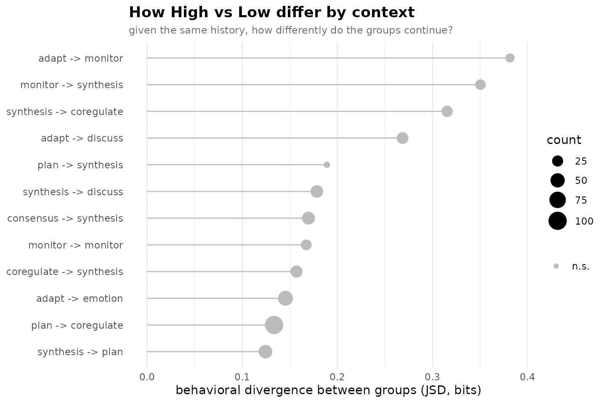
Most of the contexts with the largest divergence are rare, observed
11 to 101 times, and none of the twelve is significant after the false
discovery rate correction (grey points). To count the contexts that do
differ significantly, we call summary().
summary(group_comparison)
#> Group comparison: High vs Low (80 contexts, 99 permutations)
#> behavioral omnibus: JSD = 1772.142 bits, p = 0.010
#> usage omnibus : G2 = 1356.46, p = 0.010
#> pathways with a behavioral difference (adjusted p < 0.05): 28
#> pathways with a usage difference (adjusted p < 0.05): 43
#> pathways whose modal next state differs between groups: 26Twenty-eight contexts differ in what follows them. Each of them is observed at least 147 times, and their divergences are at most 0.12 bits: with frequent contexts a small difference is detectable, with rare ones a large difference is not.
plot(group_comparison, style = "matrix")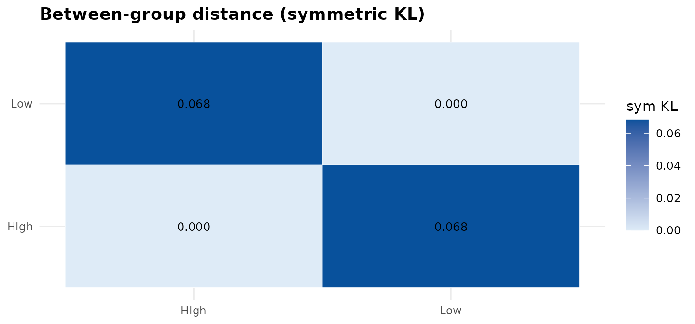
Group difference map
To map, context by context, where two groups continue differently, we
call plot_difference() with depth for the
context depth. Each cell is the Pearson residual of the first group’s
count of a next state against the count expected if both groups
continued alike; an absolute value above about 2 is notable. With the
compare_groups() result as comparison,
contexts with a significant difference are starred.
plot_difference(regulation, depth = 1L, comparison = group_comparison)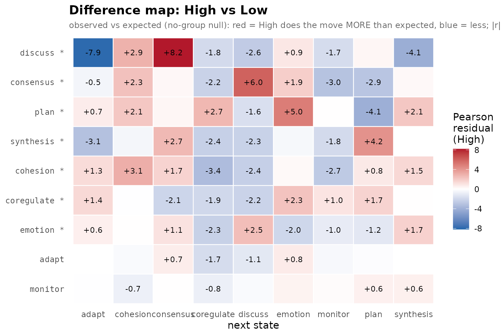
After discuss, high achievers move to
consensus more often than expected (residual 8.2) and to
adapt less often (-7.9); seven of the nine single-move
contexts carry a significant difference.
With layout = "tree", the tree of the pooled sequences
is drawn with each node colored by which group reaches that context more
often. A tree of depth two over nine states has too many leaves to
label, so we fit the groups at depth one for this view.
regulation_first <- context_tree(group_regulation_long, actor = "Actor",
time = "Time", action = "Action",
group = "Achiever", max_depth = 1L)
plot_difference(regulation_first, layout = "tree")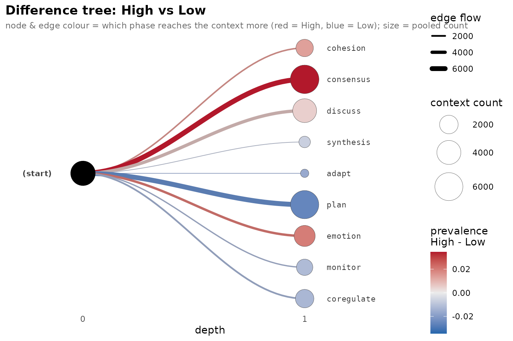
High achievers reach consensus and emotion
more often, low achievers plan.
The analysis of these two groups is developed in Comparing groups.
Tuning surface
To show the cross-validated perplexity of each configuration, we call
plot() on the result of tune_tree().
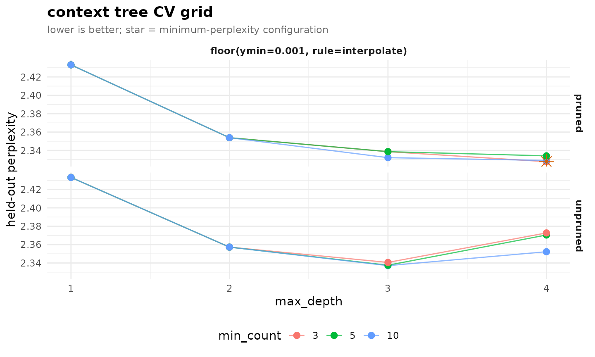
The choice of configuration from this surface is discussed in Model selection: tuning, fit and perplexity.
Summary
| Question | Call |
|---|---|
| The tree with every pathway labeled | plot(tree, style = "horizontal") |
| The tree as a circle | plot(tree, style = "dendrogram") |
| The distribution of observations over contexts | plot(tree, style = "icicle") |
| An explorable tree | plot(tree, style = "interactive") |
| One tree per group | plot(group_tree, style = "dendrogram") |
| Frequent or informative contexts | plot_pathways(tree, sort_by = "divergence") |
| Contexts that change the prediction | plot_divergence(tree) |
| Next-state distributions | plot_distributions(tree) |
| How much history one pathway needs | plot_pruning(tree, pathway) |
| Sequences forward in time | plot_trajectories(tree, measure = "frequency") |
| Predictive performance | plot_predictive(tree, newdata, type = "logloss") |
| Bootstrap intervals |
plot(bootstrap_pathways(tree)),
plot_pathway_resamples()
|
| Group tests |
plot(compare_trees(group_tree)),
plot(compare_groups(group_tree))
|
| Where two groups continue differently | plot_difference(group_tree, depth = 1L) |
| Tuning surface | plot(tune_tree(data)) |
References
Gabadinho, A., & Ritschard, G. (2016). Analyzing state sequences with probabilistic suffix trees: The PST R package. Journal of Statistical Software, 72(3). https://doi.org/10.18637/jss.v072.i03
Ron, D., Singer, Y., & Tishby, N. (1996). The power of amnesia: Learning probabilistic automata with variable memory length. Machine Learning, 25(2-3), 117-149. https://doi.org/10.1023/A:1026490906255